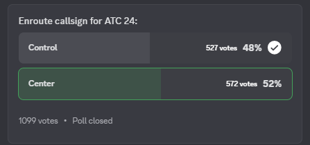

📢 ATC24 VOTE: "CENTER" EDGES OUT "CONTROL" TO BECOME MANDATED ENROUTE CALLSIGN
📊 Final Results:
✅ Center: 52% (572 votes)
❌ Control: 48% (527 votes)
🌍 After a fierce back-and-forth, the ATC24 community has decided: "Center" is now the official enroute callsign for all ATC24 stations.
⚖️ Key Stats:
Total votes: 1,099
Final margin: 45 votes
Poll closed at: ⏰ July 1, 2025 9000z
🗽 Many believe the US daytime surge gave “Center” the final edge, flipping the vote after hours of “Control” leading early on.
🚨 This outcome is final and non-negotiable — “Center” is now the only valid enroute callsign.
🛫 Thanks to everyone who voted — and get ready to use “Center” on frequency!
Author: Schales